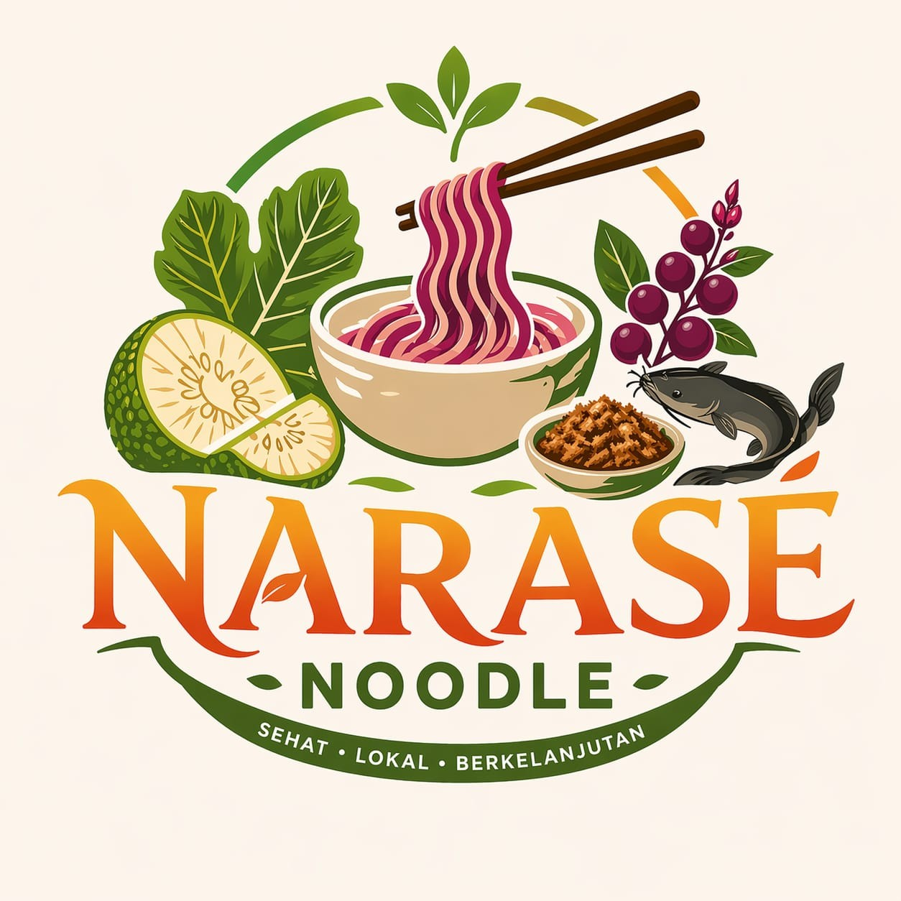

🍜 NARASÉ NOODLE
Sehat • Lokal • Berkelanjutan
Bagaimana jika mie instan tidak lagi identik dengan makanan kurang sehat, tetapi justru menjadi solusi pangan masa depan?
Deskripsi Singkat: Narasé Noodle menghadirkan inovasi mie instan berbasis sukun, diperkaya pewarna alami parijoto, dan dilengkapi abon lele sebagai sumber protein lokal.
Jelajahi Inovasi Kami ↓⚠️ Tantangan Pangan yang Kita Hadapi
Konsumsi mie instan di Indonesia terus meningkat, namun sebagian besar masih berbasis tepung terigu impor dengan kandungan gizi yang terbatas.
Di sisi lain, Indonesia memiliki kekayaan pangan lokal seperti sukun, parijoto, dan lele yang belum dimanfaatkan secara optimal.
Ketergantungan terhadap bahan impor serta kurangnya inovasi pangan lokal menjadi tantangan nyata menuju kemandirian pangan.
💡 Hadir Sebagai Solusi Inovatif
Narasé Noodle dikembangkan sebagai alternatif mie instan yang lebih sehat dan berkelanjutan dengan memanfaatkan bahan pangan lokal berkualitas.
Kombinasi ini menghadirkan produk mie instan yang tidak hanya lezat, tetapi juga bernilai gizi lebih tinggi.
🍜 Apa Itu Narasé Noodle?
Narasé Noodle adalah mie instan inovatif yang dirancang untuk menjawab kebutuhan pangan modern: praktis, sehat, dan berkelanjutan.
Dengan memadukan bahan lokal dan teknologi pengolahan yang tepat, Narasé Noodle menjadi alternatif baru bagi masyarakat yang menginginkan gaya hidup lebih sehat tanpa meninggalkan kepraktisan.
🌈 Lebih dari Sekadar Mie Instan
Sukun → sumber energi dengan indeks glikemik lebih stabil
Parijoto → kaya antioksidan alami
Lele → tinggi protein untuk pertumbuhan
Narasé Noodle menghadirkan keseimbangan antara energi, protein, dan serat dalam satu sajian praktis.
🔬 Inovasi Berbasis Lokal dan Berkelanjutan
Produk ini dikembangkan dengan pendekatan smart sustainable food, yang menekankan pada efisiensi sumber daya lokal dan dampak lingkungan yang minimal.
1. Mengurangi ketergantungan impor gandum
2. Menggunakan bahan alami tanpa zat sintetis
3. Mengarah pada konsep kemasan ramah lingkungan
psst! funfact salah satu material packaging kami bisa tumbuh bibit bunga ketika di tanam loh!
💖 Cerita di Balik Narasé Noodle
Narasé Noodle lahir dari sebuah keresahan sederhana yakni mengapa makanan yang paling praktis justru sering kali mengorbankan kesehatan?
Lebih dari sekadar mie instan, Narasé Noodle adalah upaya menghadirkan perubahan menuju pola konsumsi yang lebih sadar, mandiri, dan berkelanjutan.
🌍 Dampak yang Ingin Diciptakan
🌍 Mendukung kemandirian pangan nasional
👩🌾 Memberdayakan petani lokal
🌱 Mendorong konsumsi pangan sehat
♻️ Mengurangi dampak lingkungan
🎯 Untuk Siapa Narasé Noodle?
1. Pelajar & mahasiswa
2. Masyarakat urban
3. Konsumen mie instan
4. Individu peduli kesehatan
🍽️ Praktis dalam Penyajian
1. Rebus mie selama 3–4 menit
2. Campurkan bumbu
3. Tambahkan taburan abon lele
Praktis, sehat, dan tetap lezat!
✨ Mengapa Memilih Narasé Noodle?
✔ Berbasis bahan lokal Indonesia
✔ Lebih sehat dibanding mie instan biasa
✔ Kaya protein dan serat
✔ Menggunakan pewarna alami
✔ Mendukung keberlanjutan lingkungan
📞 KONTAK & PEMESANAN
Instagram: @narase.noodle
WhatsApp: 085647102101
Email: narasenoodle@email.com
Tertarik mencoba inovasi mie sehat masa depan? Hubungi kami sekarang dan jadilah bagian dari perubahan!